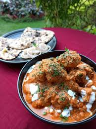

Butter Chicken

Description
Butter chicken is a very popular Indian dish
made with tender chicken
cooked in a rich, creamy tomato-based sauce
with aromatic spices.
Ingredients
- Chicken
- Butter
- Tomatoes
- Cream
- Curd
- Ginger
- Garlic
- Garam Masala
- Turmeric
- Red chilli powder
- Salt
- Fresh coriander
Steps
- Marinate the chicken with curd, ginger, garlic, and spices.
- Cook the marinated chicken until it is tender and lightly browned.
- Prepare the tomato-based sauce with butter, ginger, garlic, and spices.
- Add the cooked chicken to the sauce and simmer for several minutes.
- Add the cream, stir well and cook until the sauce becomes rich and creamy.
- Garnish with fresh coriander and serve hot.
Home